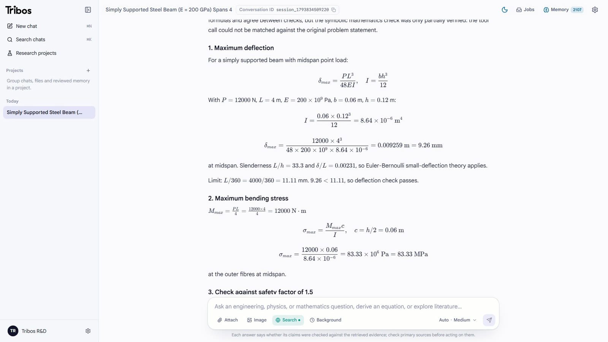
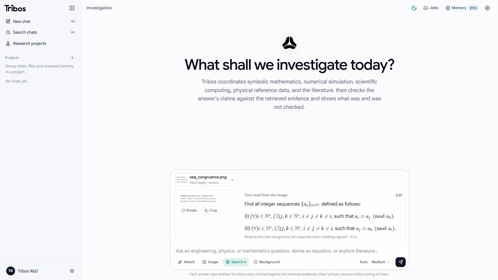
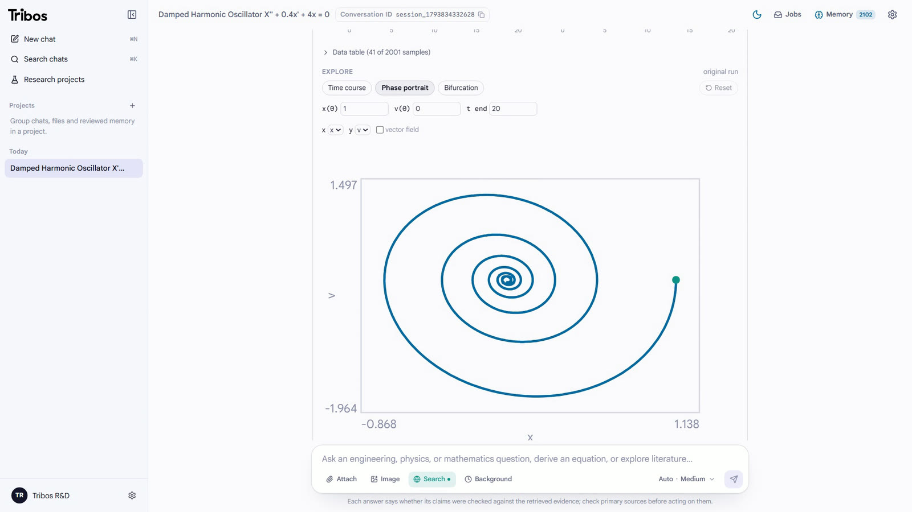

τρίβος a worn path, diligent inquiry
Hard questions.
Checked answers.
A research partner for engineering, physics and mathematics. It does the work with real tools, then shows you which claims were checked, and how.
git clone https://github.com/AtlasRoX/TribosAI
Then four commands to run it on your machine.
New: real-fluid properties and field conventions




Watch a run. Every check shows.
Four real kinds of work, played step by step.
- Tools
- 65
- tools it can call
- Engines
- 6
- specialist engines
- Checks
- 11
- independent checks
- Seals
- 6
- verification seals
- Tests
- 2,800+
- automated tests
Checked, not trusted.
The draft is a set of claims to check, not the answer. Every citation, figure and equation is tested against what this run actually computed or retrieved. A judge can downgrade a verdict, never upgrade it.
Draft
Written from this run's evidence only.
Claim and math audit
Citations, figures and units; every equation re-evaluated.
One bounded revision
From the defect list, forbidden to add facts or numbers.
Answer, with its status
Verified, checked, failed or not evaluated, kept apart.
Six seals. Every result wears one.
Accepted by a formal proof checker: no gaps, standard axioms only.
Exact or interval arithmetic that rounding cannot fool.
Two independent implementations, agreeing on every number.
Ran once in the sandbox, with its code kept beside it.
A citation this run actually retrieved, never one from memory.
Argument only, and labelled so.
Eleven independent checks
- grounding rules
- claim audit
- math audit
- bounded revision
- honest status
- counter-evidence
- gap re-retrieval
- entailment judge
- guarded rewrites
- citation links
- proof correspondence
Memory can't launder a mistake either: unverified work is never stored as evidence, refuted claims are kept as do-not-reuse, and research runs isolated from your other chats.
Same model. Better answers.
One language model, two ways: answering each problem alone, and inside Tribos. 238 problems from five public benchmarks, graded the same way for both.
- Tribos
- 98.3%
- 234 of 238
- Same model, alone
- 94.5%
- 225 of 238
- Solved by only one
- 10 to 1
- in Tribos's favour
- Paired test
- p = 0.012
- exact McNemar, two-sided
| Benchmark | Problems | Alone | Tribos | Chart, 80 to 100 percent |
|---|
Paired run, November 2026: 50 problems sampled from each benchmark (seed 1), each answered by the same language model directly and through Tribos. Twelve items whose reference answer is demonstrably wrong, or that cannot be answered from their text, are set aside for both. One grader for both: stated or boxed final answer, numeric tolerance, symbolic equivalence. Four Tribos answers were re-run after an experimental check was switched off. GPQA Diamond was run again on 7 November with the chemistry agent; the other four benchmarks are from the run of 6 November, and the model alone is the same run throughout. Per-benchmark differences are not significant on their own at 50 problems; the overall paired difference is.
Round after round, until it's settled.
Tribos charters the work, runs the ready tests in parallel, keeps every finding in a ledger, and lets deterministic evidence rules decide what is done, refuted or still open. A live estimate shows the time left.
Running in four commands.
Python 3.12+, uv, Node.js 22+ and a model API key. Optional: a proof checker for formal proofs, OCR for photos, Docker.
- ✓Projects with roles
- ✓Six orchestration modes
- ✓Exports for every answer
- ✓Uploaded papers reproduced
- ✓Background jobs, steerable
- ✓Open agent interfaces
# 1. Get the code and the dependencies
git clone https://github.com/AtlasRoX/TribosAI.git && cd TribosAI
uv sync --extra dev --extra vision --frozen
# 2. Configure: put your model API key in .env
cp .env.example .env
# 3. Start the API on http://127.0.0.1:8000
uv run uvicorn app.backend.main:app --host 127.0.0.1 --port 8000
# 4. In a second terminal, the web app on http://localhost:3000
cd web && npm ci && npm run devor both at once: docker compose -f docker/compose.yml up --build